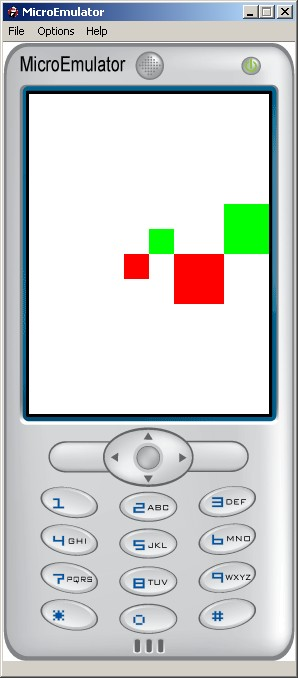

This texture acts as an image with its content resulting of the composition and rendering of the nodes contained in the children field.
MFNode children NULL :
List of node to render as a texture.
SFVec2f size 128 128 :
Size of the rendered texture.
See the Rectangle node definition for an example.
